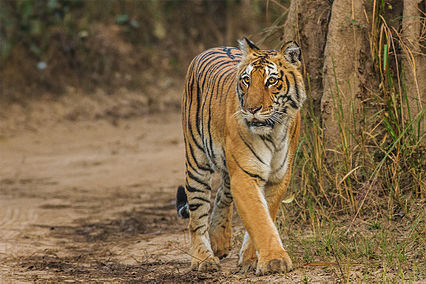
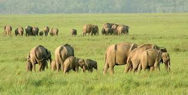
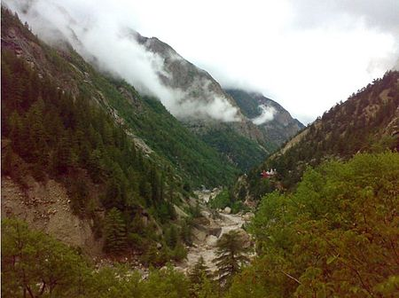
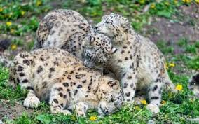
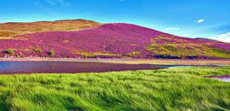
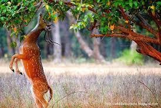

National parks in India are IUCN category II protected areas. India's first national park was established in 1936 as Hailey National Park, now known as Jim Corbett National Park, Uttarakhand.
Jim Corbett National Park

Jim Corbett National Park is the oldest national park in India and was established in 1936 as Hailey National Park to protect the endangered Bengal tiger. It is located in Nainital district of Uttarakhand and was named after Jim Corbett who played a key role in its establishment. The park was the first to come
under the Project Tiger initiative. The park has sub-Himalayan belt geographical and ecological characteristics. An ecotourism destination, it contains 488 different species of plants and a diverse variety of fauna. Corbett National Park comprises 520.8 km2 (201.1 sq mi) area of hills, riverine belts, marshy depressions, grasslands and a large lake. The elevation ranges from 1,300 to 4,000 ft (400 to 1,220 m). Winter nights are cold but the days are bright and sunny. It rains from July to September. Dense moist deciduous forest mainly consists of sal, haldu, peepal, rohini and mango trees. Forest covers almost 73%
of the park, 10% of the area consists of grasslands. It houses around 110 tree species, 50 species of mammals, 580 bird species and 25 reptile species.
Rajaji National Park

Rajaji National Park is an Indian national park and tiger reserve that encompasses the Shivaliks, near the foothills of the Himalayas. The park is spread
over 820 km2. In 1983, three wildlife sanctuaries in the area namely, Chilla, Motichur and Rajaji sanctuaries were merged into one. Rajaji National Park has
been named after C. Rajagopalachari (Rajaji), a prominent leader of the Freedom Struggle, the second and last Governor-General of independent India and one of the first recipients of India's highest civilian award Bharat Ratna (in 1954). Rajaji became the second tiger reserve in Uttarakhand on 15 April 2015.
Gangotri National Park

Gangotri National Park is a national park located in Uttarkashi District Garhwal Range of Uttarakhand, India. The size of this national park is about 2,390 square km. It is the third largest National park of India. The park provides majestic beauty of coniferous forests and grandeur of glacial world combined with lush green meadows.
Govind Pashu Vihar National Park and Sanctuary

Govind Pashu Vihar National Park and Sanctuary is a national park in Uttarakhand, India established initially as a wildlife sanctuary in 1955, and later converted into a national park. It is named after a prominent Indian freedom fighter and politician Govind Ballabh Pant, who became Home Minister in 1950 and is remembered for his achievement in establishing Hindi as an official language. The park was established on March 1, 1955, and is situated in the Uttarkashi district in the Indian state of Uttarakhand. The park lies in the higher reaches of the Garhwal Himalayas. The total area of Govind Pashu Vihar National Park and Sanctuary is 958 km2 (370 sq mi). The Snow Leopard Project started by the Government of India is being managed at this sanctuary. Also,
it is one of the remaining strongholds in the Himalayas of the bearded vulture, a vital ecological catalyst.
Valley of Flowers National Park

Valley of Flowers National Park is an Indian national park, located in West Himalaya, in the state of Uttarakhand and is known for its meadows of endemic alpine flowers and the variety of flora. This richly diverse area is also home to rare and endangered animals, including the Asiatic black bear, snow leopard, musk deer, brown bear, red fox, and blue sheep. Birds found in the park include Himalayan monal pheasant and other high altitude birds.
At 3352 to 3658 meters above sea level, the gentle landscape of the Valley of Flowers National Park complements the rugged mountain wilderness of Nanda Devi
National Park to the east. Together, they encompass a unique transition zone between the mountain ranges of the Zanskar and Great Himalaya. The park stretches over an expanse of 87.50 km2 and it is about 8 km long and 2 km wide. Both parks are encompassed in the Nanda Devi Biosphere Reserve (223,674 ha) which is further surrounded by a buffer zone (5,148.57 km2).
Nanda Devi National Park

The Nanda Devi National Park or Nanda Devi Biosphere Reserve, established in 1988 , is a national park situated around the peak of Nanda Devi (7816 m) in the state of Uttarakhand in northern India. The entire park lies at an elevation of more than 3,500 m (11,500 ft) above mean sea level. The National Park was inscribed a World Heritage Site by UNESCO in 1988. The latter was expanded and renamed to Nanda Devi and Valley of Flowers National Parks in 2005.
Within the National Park lies the Nanda Devi Sanctuary, a glacial basin surrounded by a ring of peaks between 6,000 metres (19,700 ft) and 7,500 m (24,600 ft) high, and drained by the Rishi Ganga through the Rishi Ganga Gorge, a steep, almost impassable defile. The National Park is embedded in the 2,236.74 km2
(863.61 sq mi) sized Nanda Devi Biosphere Reserve, which, in turn, is encompassed in the 5,148.57 km2 (1,987.87 sq mi) buffer zone around the Nanda Devi and
Valley of Flowers National Parks UNESCO site.